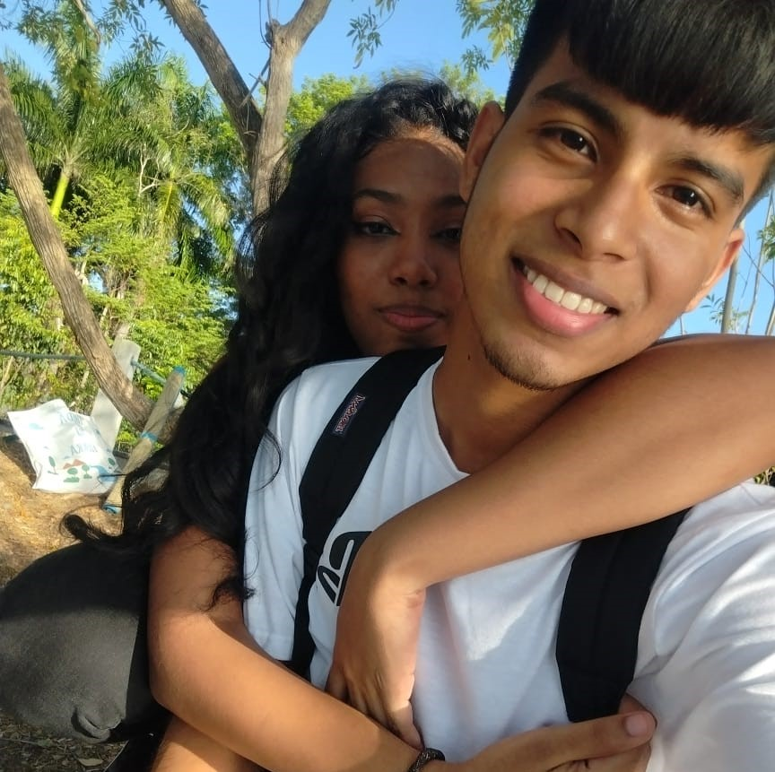
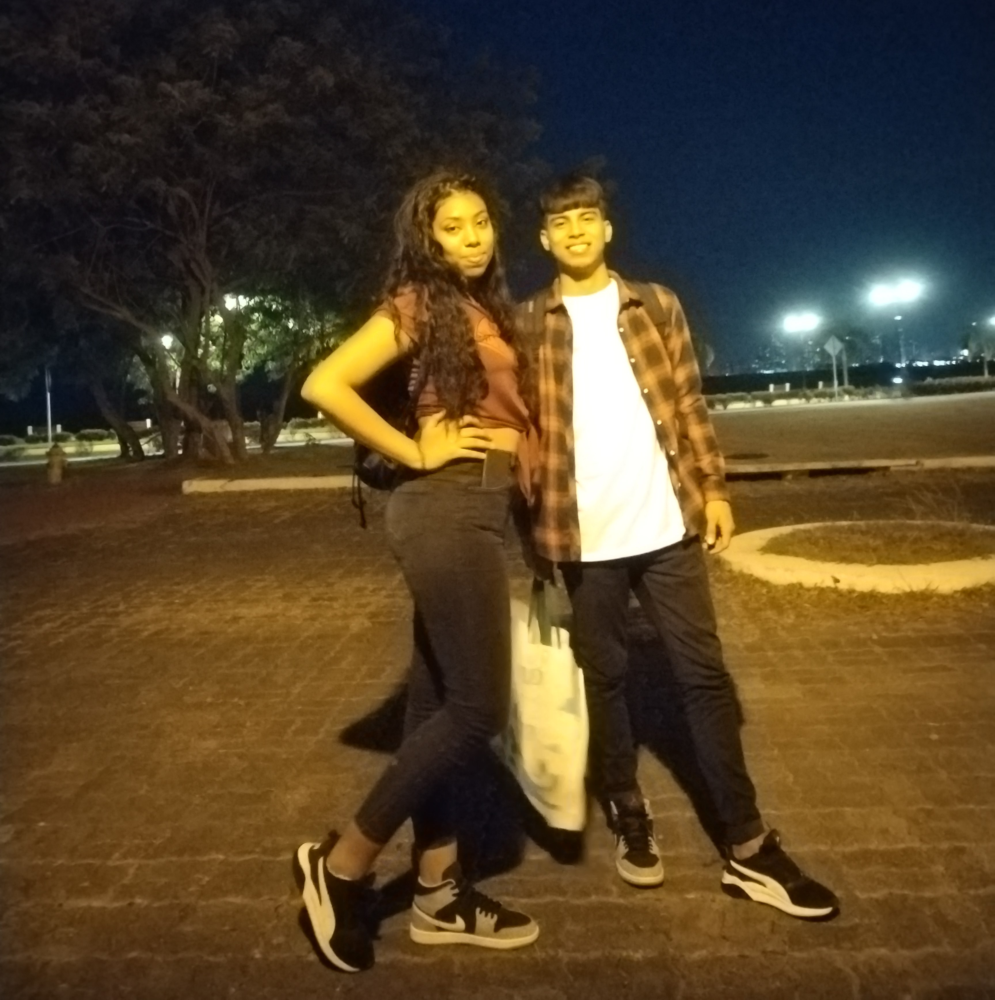
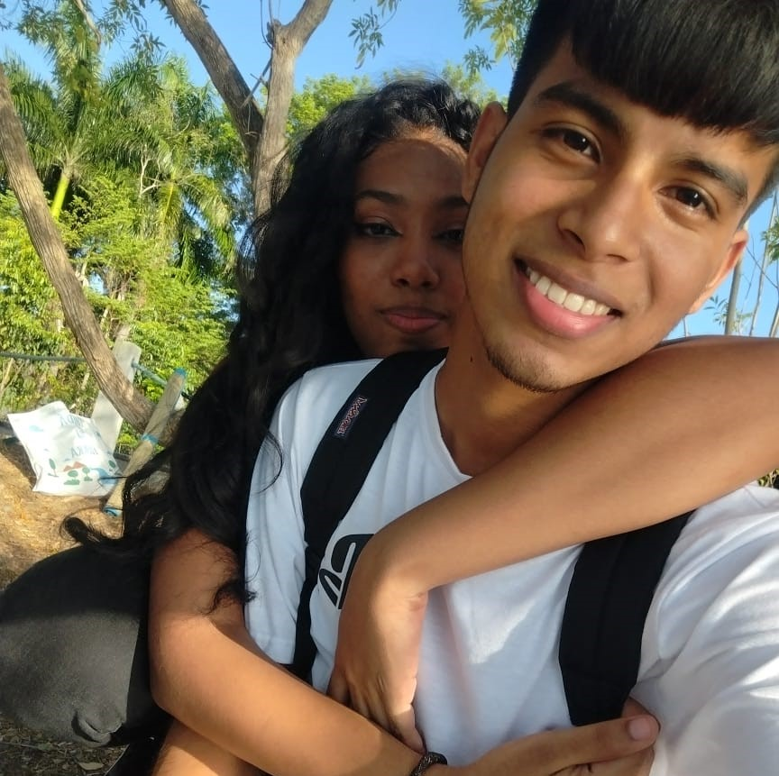
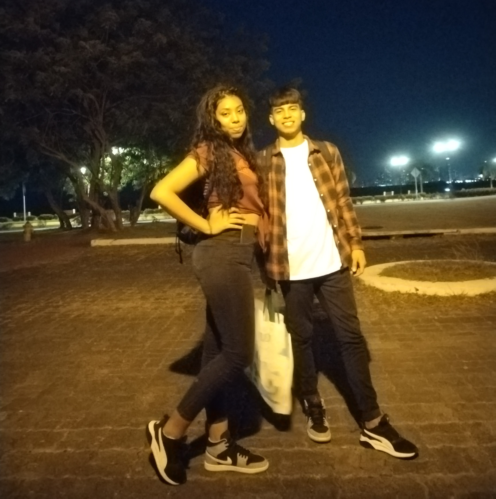
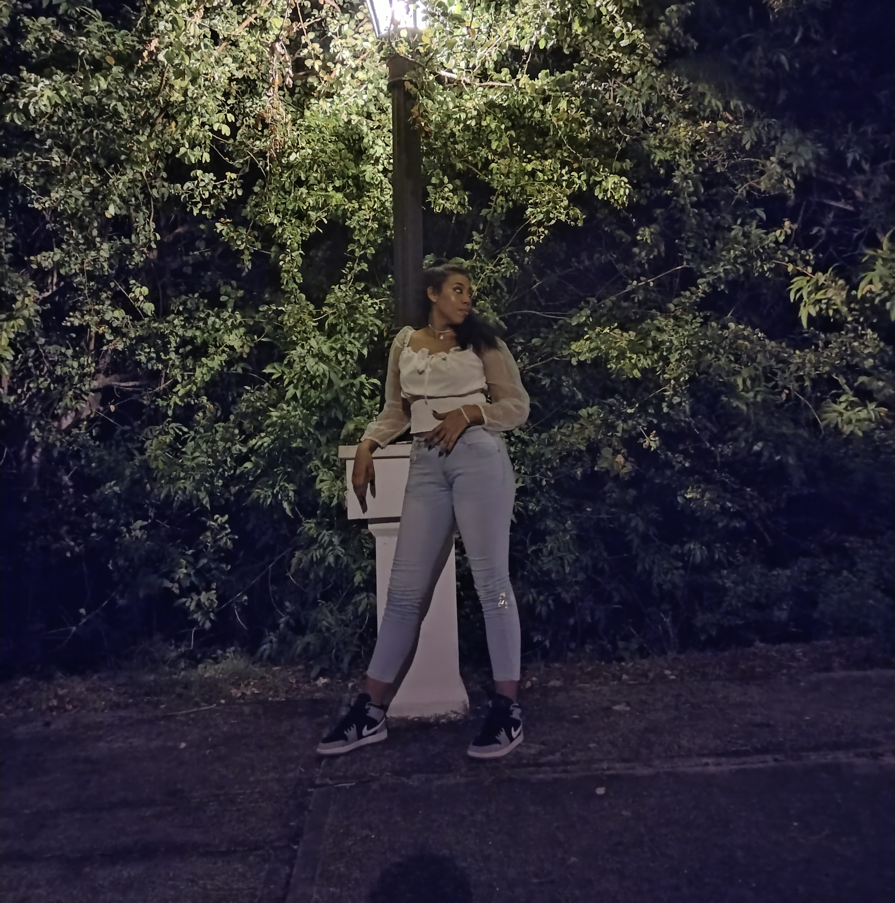
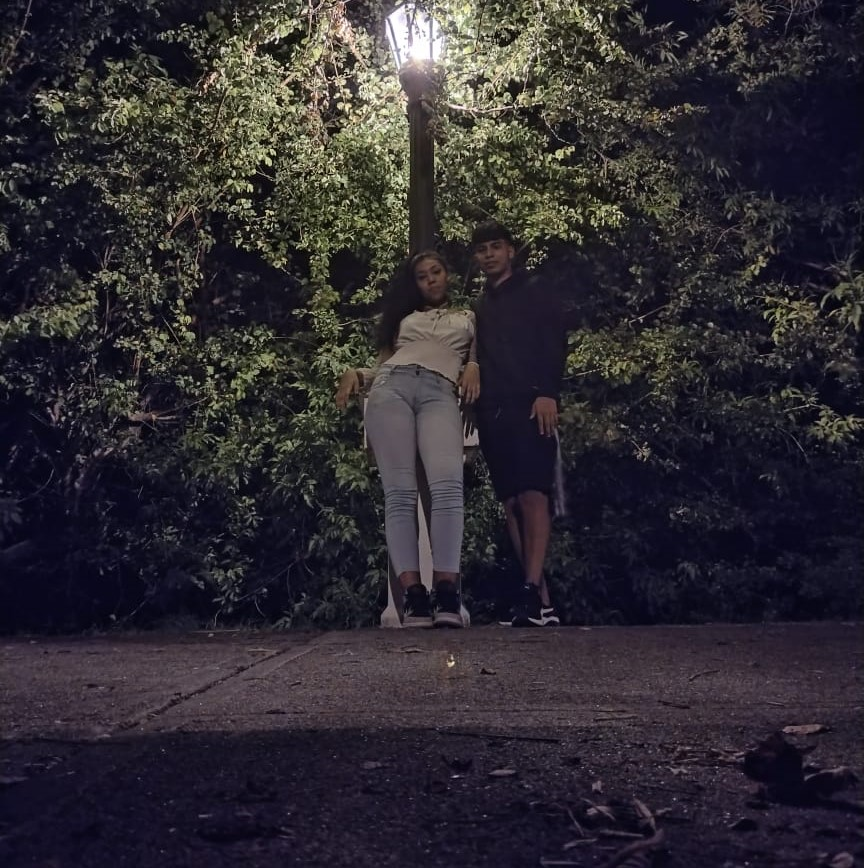
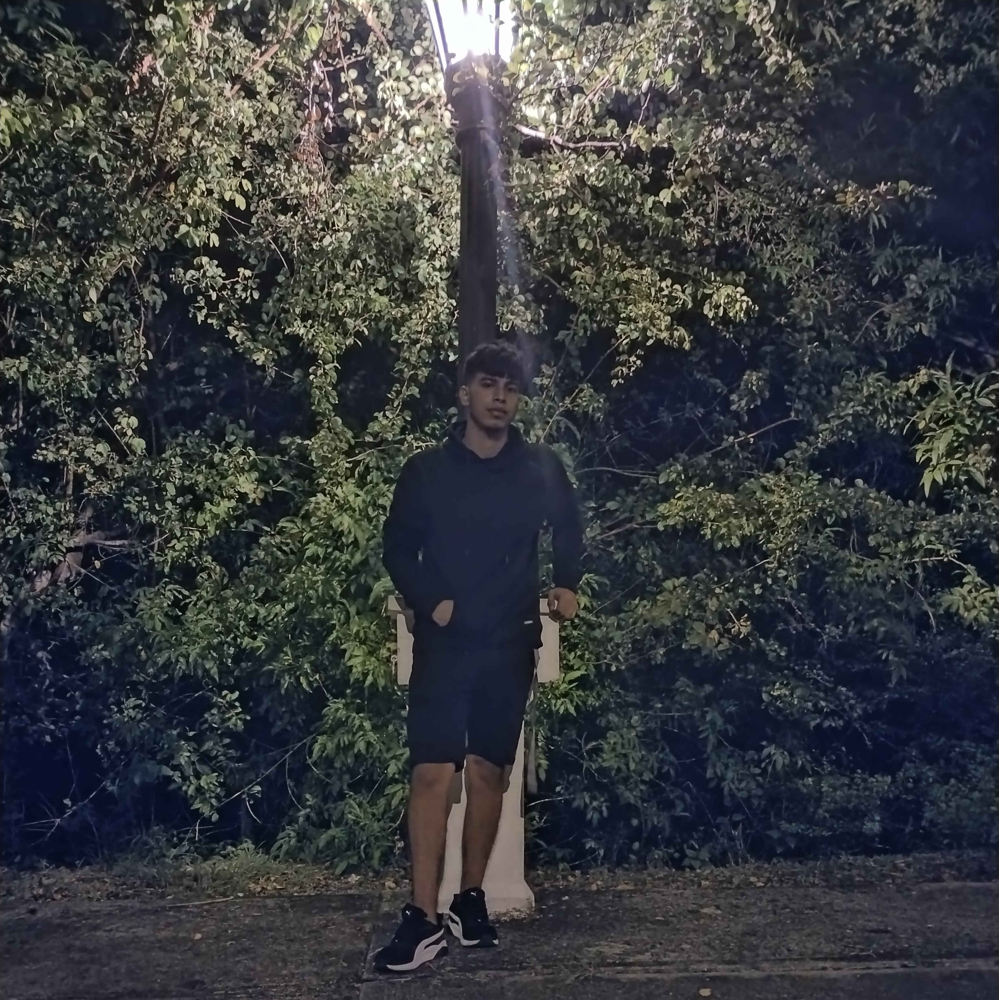
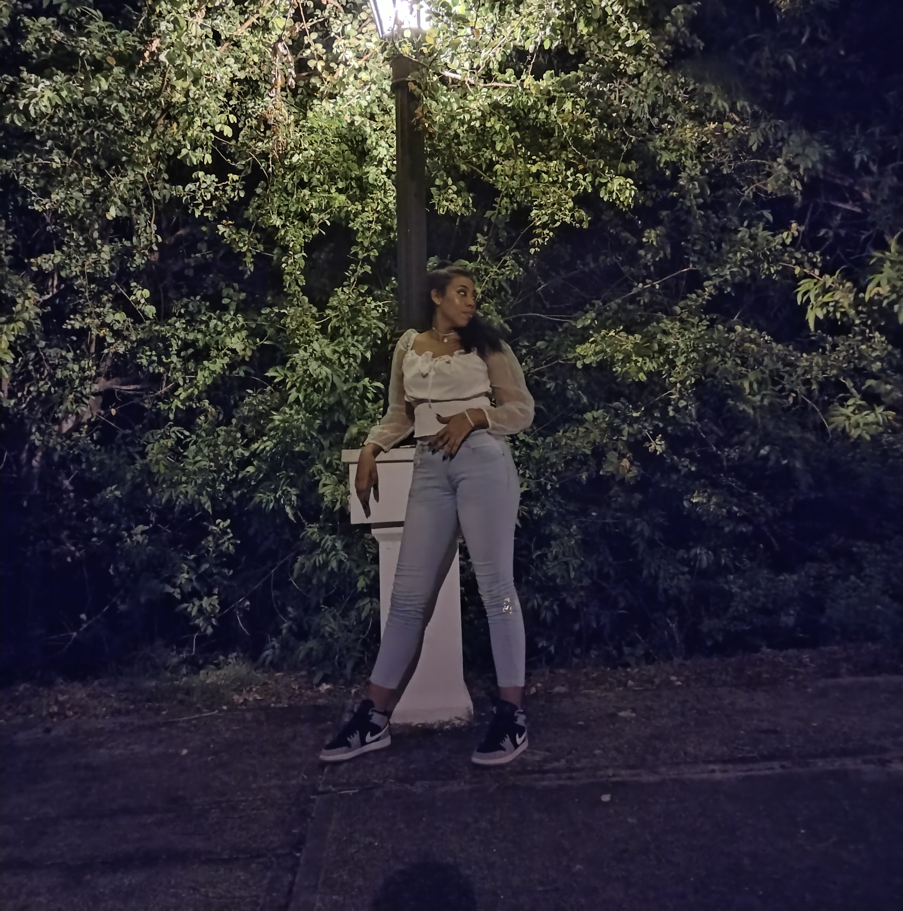
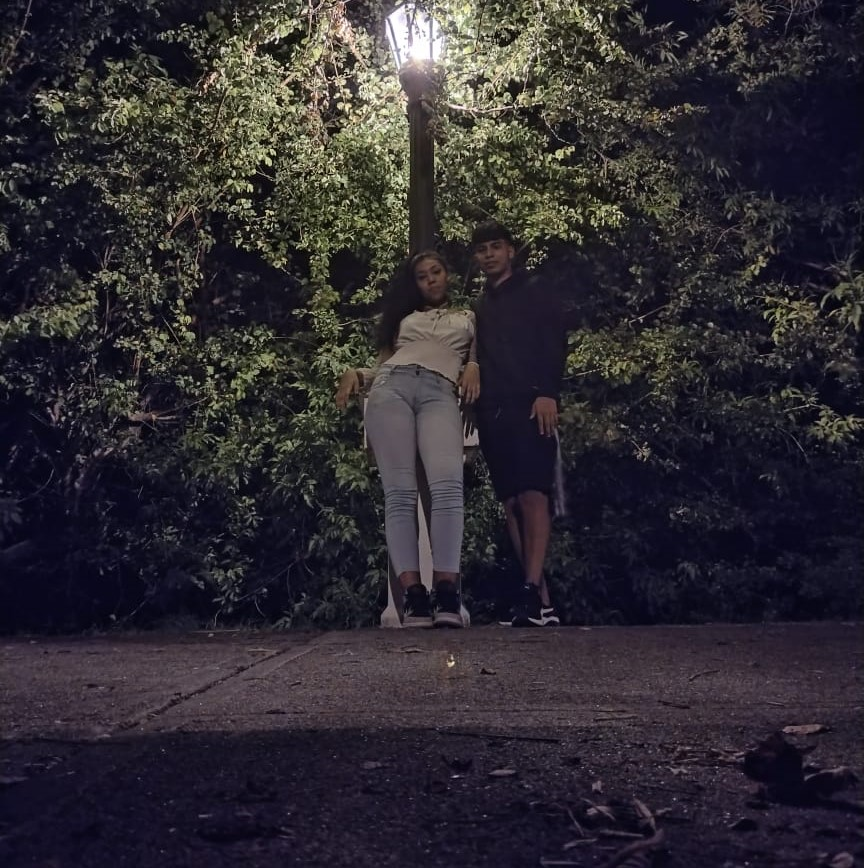
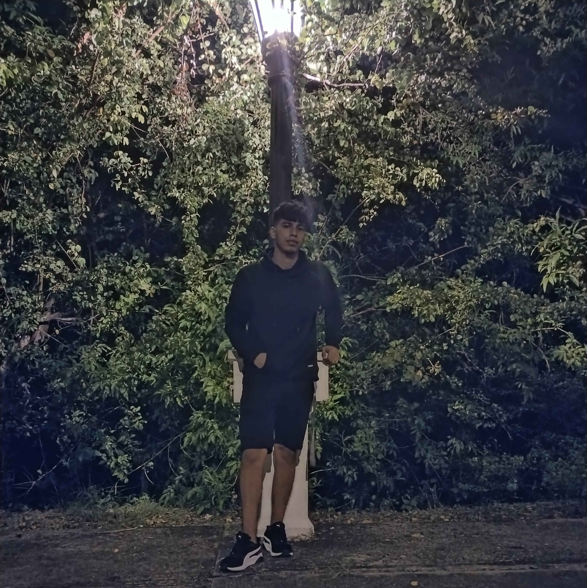

METRO SAN MIGUELITO
Ahí estabas tú, el año 2022, la primera vez que nos vimos en persona. Lo recuerdo como si fuera ayer. Solo te vi, fui hacia ti y te abracé.

PARADA SAN MIGUELITO
Aquí nos veíamos todos los días para tomar el bus junto a tu mamá e ir al curso, recuerdo que antes solo habia una carpa. Esperábamos el Metrobús La Siesta o Pedregal, y si era Pedregal, hacíamos transbordo en la ZP Pedregal.
PRIMER BESO
Justo en esos puestos estábamos tú y yo. Nos besamos por primera vez mientras ibamos hacia el curso. Fue un momento especial que quedo grabado en mi memoria.

INADEH TOCUMEN
Cuántos momentos no vivimos juntos aquí. Desde compartir día a día hasta esos pequeños detalles, como cuando me llevabas comida. Aprecié mucho esos gestos. También recuerdo cuando nos regañaron por besarnos durante el break, jajaja. O aquellas veces en clase cuando te apretaba los muslos. Son tantas cosas, amor, y sobre todo porque este curso fue el que nos hizo coincidir.

PARADA INADEH
Aún recuerdo cuando veniamos a esperar el bus aquí, demoraba mucho en pasar. También recuerdo cuando te hacia escenas de celos y me iba por mi lado, jajaja.
ZP PEDREGAL
Aquí veniamos siempre a tomar el transbordo hacia San Miguelito, justo en esta puerta. Casualmente hoy 1 de Febrero soñe contigo donde me preguntabas: ¿Recuerdas en que puerta nos haciamos a esperar el bus?

ZP CERRO VIENTO
Recuerdo cuando me pediste que te acompañara a comprar en el mall y al salir no habia bus, el pais estaba en huelga. pasamos horas esperando bus hasta que llego, un caos seguro contigo.

TU CASA
Aquí estaba yo, ya eran las 10 de la noche, más o menos. Recuerdo que habían cerrado la calle rumbo a mi casa y tú ya te habías ido en un taxi. Cuando te comenté eso, simplemente regresaste y me dijiste: "Ven, puedes quedarte en mi casa.
 



PICNIC
En este lugar fue nuestro primer y unico picnic, nos tomamos varias fotos y recuerdo que intercambiamos de zapatillas, apreciamos el atardecer y vimos el barco estilo pirata. fue bonito todo.

ARBOL
Recuerdo que pasábamos por aquí de noche mientras andábamos en bicicleta. Nos deteníamos a contemplar la hermosa vista que ofrecía este majestuoso árbol. Hoy volví a verlo y me encontré con una imagen diferente. En ese momento, vino a mi mente la siguiente frase: "Procura no hacer leña del árbol que te dio sombra."
 





FAROL
Aquí llegamos por la noche, fue donde nos tomamos una de mis fotos favoritas